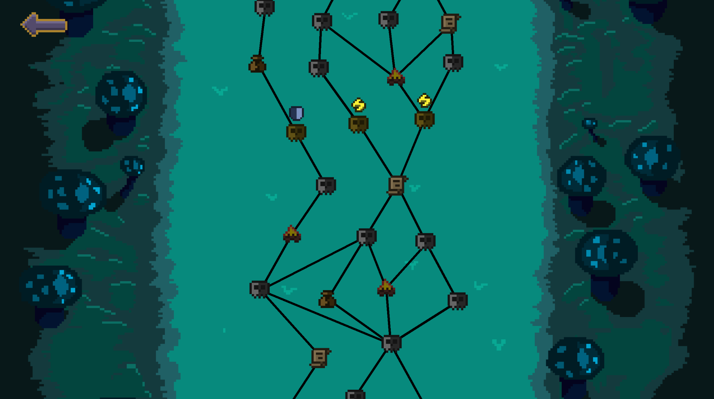
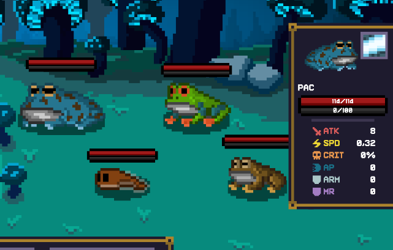
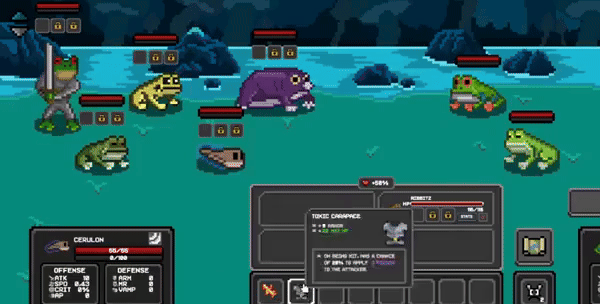
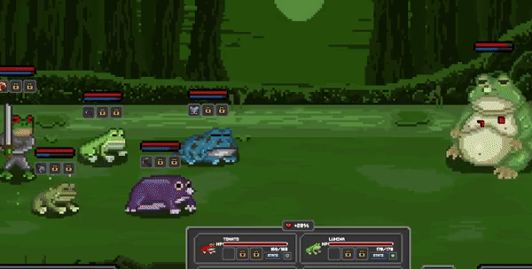
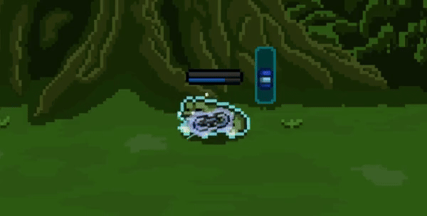
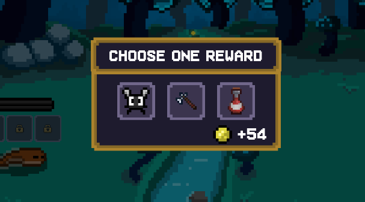

Quick Introduction

Kamil Jurczenko
Solo developer of Hopfall
Also doing freelance work


The Core Concept
TAME
Defeat corrupted frogs and win them over for future battles.
BUILD
Equip items, combine abilities, and discover team synergies.
ADAPT
Read enemy formations, reposition, and survive one battle at a time.
Core Gameplay Loop
- Plan route
- Scout encounter
- Position frogs
- Resolve autobattle
- Tame frogs
- Upgrade build
- Adapt path






What Makes the Loop Interesting
Recruitment Decisions
Every defeated frog is a strategic question: raw power, synergy value, or bench depth?
Formation Counterplay
Autobattles stay active because the important choice happens before combat starts.
Synergy Discovery
The fun spike comes from seeing a strange frog-item combination suddenly make sense.
Roguelite Variety
Run identity changes through recruits, encounters, items, and the order you discover them.
Run Structure
Early Run → hero frog, easy encounters, simple items
Mid Run → rare items, shops, event buffs, stronger frogs
Late Run → harder formations, synergy checks, bench depth


What Players Can Expect
- 3 frog heroes
- 50+ tamable frogs
- 100+ items
- 100+ encounters
- 3 bosses
- 3 biomes
Challenges I Faced
Player frogs can equip items, enemies cannot. How do I stop battles from becoming too easy?
→ I introduced elite battles that give enemies unique buffs.
How to find players to gametest?
→ Reddit, itch.io feedback-for-feedback, and friends with facecam plus screen recording.
How to find my target group?
→ I posted on frog subreddits and looked for YouTubers who play autobattlers and roguelites.
What's Next
- Prepare for a Steam demo
- Run lots of playtests
- Keep balancing and polishing
- Add more items
- Add more frogs